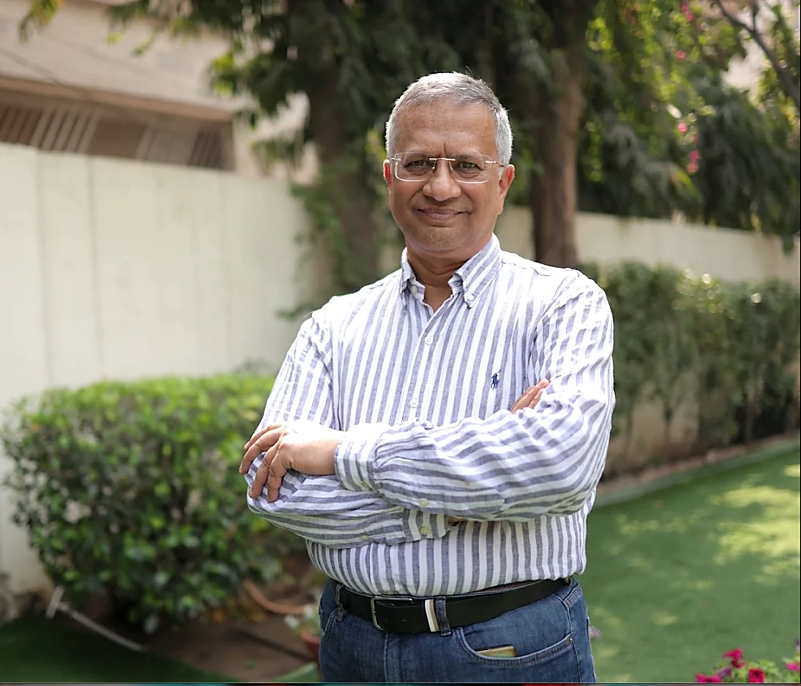

Gorav Gupta
Four decades spent with the illnesses that take the longest — and the conviction that treatment is finished only when a person can live their life again.

Dr. Gorav Gupta Senior psychiatrist, practising across New Delhi, Gurugram and the NCR.
01 About the doctor
A steady hand
A practice built around the illnesses that take the longest to heal.
Dr. Gorav Gupta is a senior psychiatrist in New Delhi and Gurugram with more than forty years in practice. His clinical interest sits where psychiatry is hardest and slowest: de-addiction medicine, long-term rehabilitation, and dual diagnosis — substance use disorder running alongside another psychiatric illness.
He works through a team — psychiatrists, psychologists, addiction counsellors and paramedical staff — rather than alone, and has treated patients from across India as well as the United Kingdom, Nepal, Bhutan and Afghanistan.
- Qualified
- M.B.B.S. · M.D. (Psychiatry)
- Practice
- 40+ years
- Focus
- De-addiction medicine, rehabilitation, dual diagnosis
- Recognition
- Economic Times “Psychiatrist of the Year”, National
- Consults
- Hauz Khas, New Delhi · Sector 64, Gurugram
02 The journey
Five chapters
-
Foundation
Medicine, then the mind
An M.B.B.S. followed by an M.D. in Psychiatry — the beginning of a career spent almost entirely in clinical practice rather than away from it.
-
Specialism
De-addiction and the dual diagnosis
A deliberate turn toward addiction medicine and rehabilitation, and toward patients carrying both a substance use disorder and a psychiatric illness — the cases that resist a single, tidy diagnosis.
-
Tulasi
Acute care, and somewhere to go afterwards
Clinical guidance for Tulasi Psychiatric & Rehabilitation Centre, an acute facility for addiction, psychosis and agitated behaviour; and for Tulasi Home, a registered NGO offering long-term rehabilitation for schizophrenia, bipolar disorder and other chronic illness — recognised under the PWD Act, 1995.
-
Beyond
Outside the consulting room
A free OPD and regular camps for patients who could not otherwise afford care; work with the Delhi Government’s Department of Social Welfare; and a seat on a panel reviewing the Mental Healthcare Act, 2017.
-
2024
National Task Force on Brain Health
Co-opted as a member of the National Task Force on Brain Health, NITI Aayog.
03 Areas of care
What he treats
De-addiction
Treatment for alcohol and drug dependence, from medically supervised withdrawal through to relapse prevention. The emphasis is less on detoxification itself than on what holds afterwards.
Dual diagnosis
A substance use disorder alongside a second psychiatric condition. Treating either one in isolation tends to fail, which is why these cases are managed together and over a longer horizon.
Schizophrenia
A chronic and severe illness that asks for continuity more than intensity. Acute episodes are stabilised; the longer work is rehabilitation and a return to ordinary function.
Bipolar disorder
Formerly called manic-depressive illness. Care is built around recognising the shape of a particular person’s cycle, and around staying well between episodes.
Depression
A mood disorder, not a mood. Assessment distinguishes depressive illness from the ordinary low periods it is often mistaken for, and treatment is matched to severity.
Anxiety & OCD
Anxiety disorders, obsessive-compulsive disorder and the stress states that sit beneath them — treated with a combination of medication and structured behavioural work.
Personality disorders
Borderline, narcissistic and schizotypal presentations, where the difficulty is enduring rather than episodic. The work is slower, more relational, and measured over months.
The objective of treatment is to make this patient functional so as to integrate them into society.
Dr. Gorav Gupta — on the objective of rehabilitation
04 The record
Credentials & service
Qualifications
- M.B.B.S.
- M.D. — Psychiatry
- Economic Times “Psychiatrist of the Year”National
Policy & public service
- National Task Force on Brain Health, NITI AayogCo-opted member, 2024
- Department of Social WelfareGovernment of Delhi
- Mental Healthcare Act, 2017Member of a review panel
- Free OPD and community campsFor patients unable to afford care
Institutions & memberships
- Tulasi Psychiatric & Rehabilitation CentreAcute care
- Tulasi HomeLong-term rehabilitation · registered NGO
- Delhi Psychiatry Society
- Indian Association of Private Psychiatry
- Indian Association of Psychiatry
06 What to expect
Coming in
Understanding
Most people arrive unsure whether what they are dealing with warrants a psychiatrist at all. The first task is simply to describe it accurately, without rushing to name it.
Consultation
A full history and assessment, in person at Hauz Khas or Sector 64, or online. Where it helps, structured assessment tools are used alongside the conversation.
Treatment
A plan matched to severity — medication, CBT or DBT, Deep TMS, biofeedback — delivered by a team rather than one clinician, and adjusted as things change.
Continued care
For chronic illness and addiction, the months after the acute phase matter most. Aftercare, review and rehabilitation continue well past the point where the crisis has passed.
07 Talk to us
You do not have to work it out on your own.
Tulasi Healthcare is a phone call away. Call +91 88000 00255 to speak with the team about a consultation — for yourself or for someone close to you. In an emergency, contact local emergency services.
08 Common questions
Before you come in
How do I know whether I should see a psychiatrist?
If low mood, anxiety, compulsions, substance use or changes in thinking are getting in the way of work, relationships or sleep for more than a few weeks, an assessment is reasonable. You do not need to be certain what is wrong — describing it accurately is the first task.
What happens at a first consultation?
A full history and assessment, in person at Hauz Khas or Sector 64, or online. Where it helps, structured assessment tools are used alongside the conversation. A treatment plan follows, matched to severity.
Can I consult online?
Yes. Consultations are available online as well as in person at both consulting rooms.
Can family members be involved?
For long-term conditions such as schizophrenia, bipolar disorder and addiction, family support is part of care, and the team works with families on psychoeducation and aftercare.